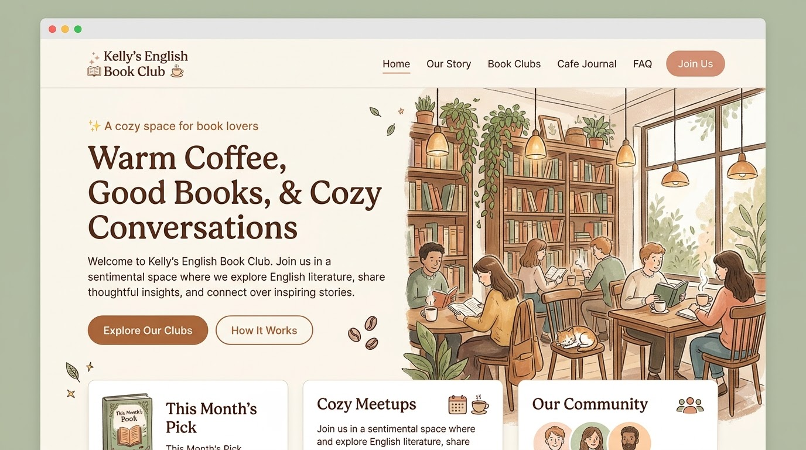

A Book to Begin
마음에 남는 문장 하나로 시작해요.
함께 읽을 책은 곧 소개합니다.
✧ A cozy space for book lovers
문화가 있는 삶, 빛나는 오늘한 권의 영어책, 따뜻한 커피 한 잔.
책 속 이야기를 나누며 영어와 조금 더 가까워지는 곳.
Kelly’s English Book Club에 오신 것을 환영합니다.

마음에 남는 문장 하나로 시작해요.
함께 읽을 책은 곧 소개합니다.
완벽한 영어보다 편안한 대화.
우리만의 속도로 이야기를 나눠요.
책을 좋아하는 마음이면 충분해요.
당신의 이야기를 기다립니다.
A little reading.한 페이지에서 시작되는, 조금 더 풍성한 하루
A little conversation.
A lovely part of your day.
OUR STORY
영어책을 혼자 읽다 멈춘 적 있나요? 이해하지 못한 문장이 있어도, 생각을 영어로 표현하는 데 시간이 걸려도 괜찮습니다.
함께 읽고, 마음에 남은 구절을 고르고, 서로의 생각에 귀 기울이는 시간. Kelly’s English Book Club은 그런 만남을 꿈꿉니다.
처음 오셨나요? 자주 묻는 질문 →FIND YOUR CHAPTER
가볍게 읽는 짧은 글부터 천천히 음미하는 이야기까지. 함께 나눌 활동을 소개합니다.
짧은 에세이와 한 페이지의 글을 읽고, 마음에 드는 표현을 찾아보는 시간입니다.
인물의 마음과 이야기의 흐름을 따라가며, 나에게 남은 장면을 함께 나눕니다.
책에서 만난 주제를 영화, 여행, 일상으로 이어가며 나만의 생각을 표현해 봅니다.
위 내용은 준비 중인 활동 소개입니다. 실제 개설 모임, 선정 도서, 일정과 참가비는 확정 후 안내합니다.
CAFE JOURNAL
처음부터 사전을 펼치기보다 한 문단을 끝까지 읽어보세요. 문맥으로 뜻을 짐작하고, 다시 읽고 싶은 문장에 표시해 두면 충분합니다.
“Which sentence stayed with you?” — 어떤 문장이 마음에 남았나요? 정답을 찾기보다, 그 문장이 나에게 특별했던 이유를 이야기해 보세요.
A FEW THINGS TO KNOW
가벼운 마음으로 시작해 보세요.
유창함보다 읽고 이야기하고 싶은 마음을 소중히 생각합니다. 모임별 권장 읽기 수준과 진행 언어는 모집 안내에서 확인하실 수 있도록 준비 중입니다.
짧은 글과 영어 문학을 중심으로 함께 읽을 책을 준비하고 있습니다. 선정 도서는 모임이 확정되면 이곳에 안내합니다.
현재 모임 일정과 장소는 준비 중입니다. 온라인·오프라인 진행 여부를 포함한 세부 정보는 확정 후 공지합니다.
참가비와 신청 채널은 아직 공개되지 않았습니다. 아래 참여 안내에서 모집 상태를 확인해 주세요.
THERE’S A PLACE FOR YOU HERE
책 한 권과 열린 마음.
우리의 다음 이야기를 함께해요.
신청 채널이 열리면 이곳에서 안내합니다.